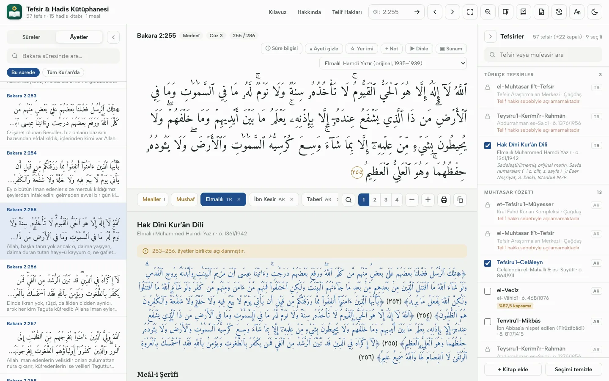
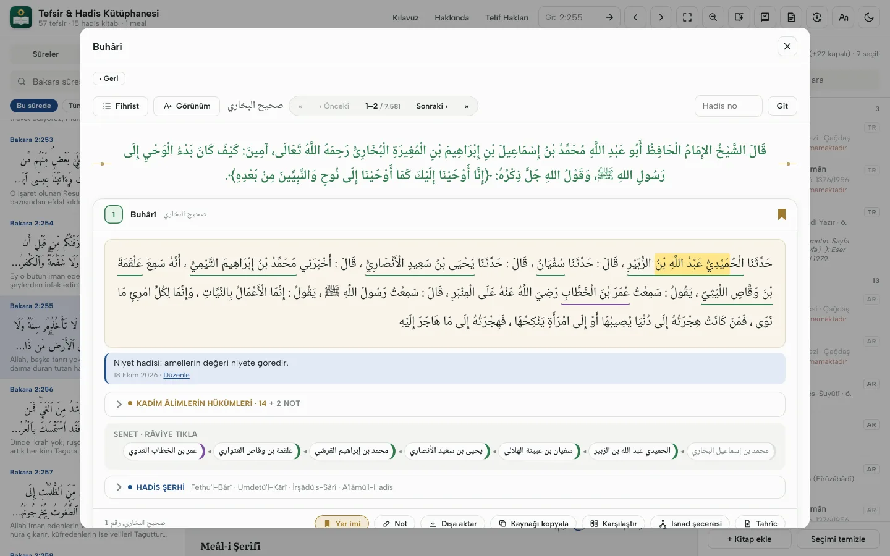
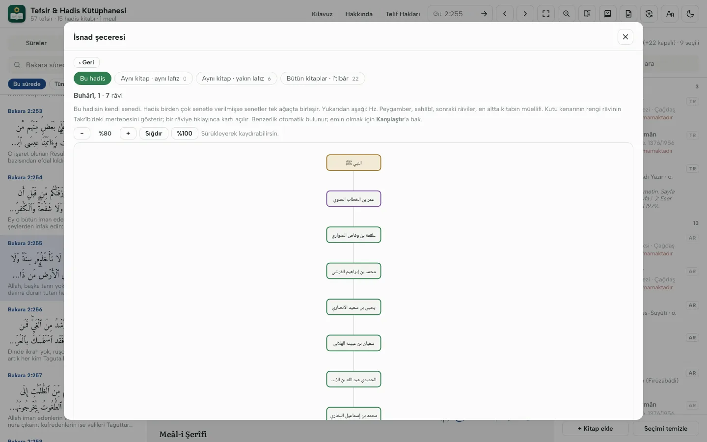
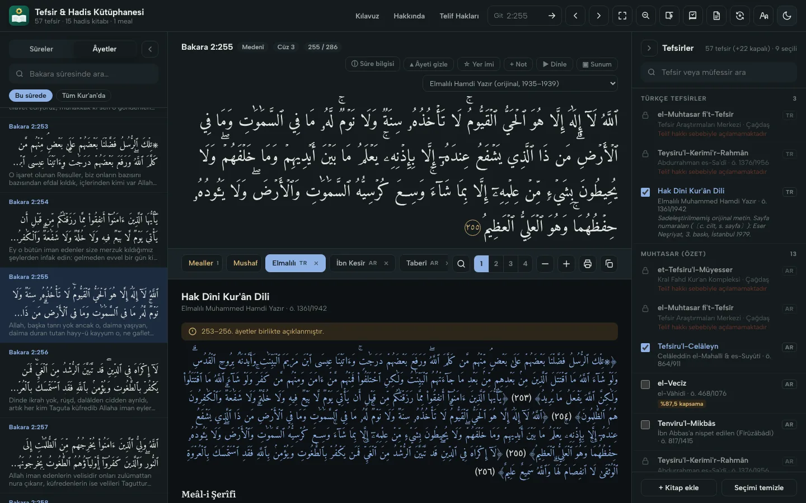

اقْرَأْ بِاسْمِ رَبِّكَ الَّذِي خَلَقَ
Kur'an'ı tefsirleriyle,
hadisi senediyle okuyun
Klasik tefsirleri, hadis kitaplarını, şerhleri ve kadim sözlükleri bir arada sunan ücretsiz bir Windows programı. Kurulduktan sonra internet gerektirmez.
Ücretsiz indir
Neler yapabilirsiniz?
Bir âyeti açtığınızda seçtiğiniz bütün tefsirler yan yana gelir; bir hadisi açtığınızda senedi, şerhi ve râvileri bir tık uzaktadır.
Âyet âyet tefsir
Rivâyet, dirâyet ve işârî tefsirler; Elmalılı'nın Hak Dîni Kur'ân Dili'si sadeleştirilmemiş aslıyla, cilt ve sayfasıyla.
İsnad şeceresi
Bir hadisin senedi ağaç olarak; aynı ve yakın lafızlı rivâyetler, bütün kitaplardaki tarikleri (i'tibâr).
Râvi bilgileri
Takrîb, el-Kâşif, Tehzîbü't-Tehzîb ve Mîzân maddeleri; cerh-ta'dîl tablosu, iki râvi arasındaki bağlantı.
Arama ve kök
Bütün tefsirlerde, hadislerde ve şerhlerde arama; Arapça kelimeleri köküne göre bulma.
Tahrîc raporu
Bir hadisin bütün kitaplardaki yerleri, senetleri ve kadim âlimlerin hükümleri tek Word belgesinde.
Notlar ve konu dosyaları
Âyet, tefsir ve hadis notları; etiketler, yer imleri ve vurgular, hepsi kendi bilgisayarınızda.



Kütüphane
Bütün metinler matbu nüshalara dayanır; şerh ve sözlüklerde cilt ve sayfa verilir, kaynak olarak gösterilebilir.
Türkçe
Elmalılı Muhammed Hamdi Yazır, Hak Dîni Kur'ân Dili (ilk baskı, 1935–1939) ve kendi meâli
Rivâyet tefsirleri · 11
Taberî, İbn Ebî Hâtim, İbn Kesîr, Suyûtî (ed-Dürrü'l-Mensûr), Begavî, Sa'lebî, Mukātil…
Dirâyet tefsirleri · 26
Mâtürîdî, Zemahşerî, Râzî, Kurtubî, Beyzâvî, Nesefî, Ebû Hayyân, Ebüssuûd, Âlûsî, Şevkânî…
İşârî tefsirler · 9
Tüsterî, Sülemî, Kuşeyrî, Baklî, Necmeddîn-i Kübrâ, Kâşânî, Rûhu'l-Beyân, İbn Acîbe…
Muhtasar ve diğerleri · 13
Celâleyn, Vâhidî, İbn Cüzey, Menâr, Süfyân es-Sevrî, Nesâî, İbn Arafe, ed-Dürrü'l-Masûn…
Hadis · 15 kitap
Kütüb-i Sitte, Muvatta, Müsned, Dârimî, Müstedrek, İbn Hibbân, İbn Huzeyme, Musannefler
Şerhler · 17
Fethu'l-Bârî, Umdetü'l-Kārî, İrşâdü's-Sârî, el-Minhâc, Avnü'l-Ma'bûd, Tuhfetü'l-Ahvezî…
Sözlükler · 8
en-Nihâye, Lisânü'l-Arab, Tâcü'l-Arûs, el-Kāmûsü'l-Muhît, es-Sıhâh, Mekāyîsü'l-Luga, el-Misbâhu'l-Münîr, Meşâriku'l-Envâr
Kurulum
Tek dosya indirmeniz yeter; gereken veriler kurulum sırasında kendiliğinden iner.
- Kurulum.exe'yi indirip çalıştırın (yaklaşık 90 MB).
- Kurulum, tefsir verilerini (yaklaşık 120 MB) ve seçerseniz şerh ve sözlük paketlerini (66 MB) internetten indirir; her dosyanın doğruluğunu denetler.
- Program masaüstüne ve Başlat menüsüne eklenir. Yeni sürümler ve yeni eserler program içinden kendiliğinden gelir.
Mac ve Linux: macOS Apple Silicon (M1–M4) · macOS Intel · Linux 64 bit. Paketin içindeki BENİOKU.txt kurulumu anlatır; veriler ilk açılışta program içinden iner. Bütün sürümler: Releases.
Windows uyarı verirse: Program henüz bir yayıncı sertifikasıyla imzalanmadığı için Windows "bilgisayarınızı korudu" diyebilir. Ek bilgi › Yine de çalıştır'a basarak kurabilirsiniz. Kurulum dosyasının SHA-256 sağlama toplamı surum.json'da yayımlanır.
Telif hakları
Klasik eserlerin müellifleri yüzyıllar önce vefat etmiştir; muhakkik dipnotları, mukaddimeler ve ekler alınmamıştır.
Telif hakkı koruması süren çağdaş tefsir ve mealler programda adıyla listelenir, ancak metinleri programa konmamıştır ve açılmaz. Hak sahiplerinden izin alındıkça açılacaktır. Hak sahibiyseniz ya da bir eserin yer almasına izin vermek isterseniz bize yazın: tefsirhadiskutuphanesi@gmail.com